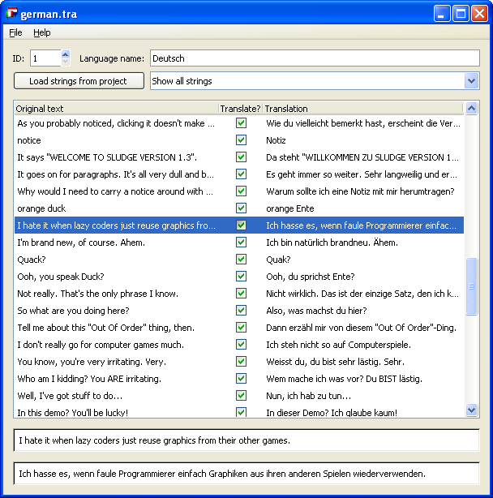

| About the SLUDGE Translation Editor |
The SLUDGE Translation Editor is a program which helps you create translation data for SLUDGE games. You know, so you can play the same game in multiple languages without lots of rewriting of code. This is how it looks loke:

The SLUDGE Translation Editor has been specifically designed so that you don't need to understand the SLUDGE language in order to create a translation file. Neither do you need to be the author of the game being translated, neither do you need access to the source code. If you've written a SLUDGE game and want someone to create you a translation file, simply build them a file with everything left in the "Strings that are missing translations" category and send it to them. If, on the other hand, you've been inlisted to create a translation file for someone else's game, skip straight to the editing section of this file.
If you're starting a new translation file you'll obviously need to import some strings from somewhere. (Also, if you're working with an existing translation file and the strings in the project you're translating change, you may well need to update the strings you're translating.) To import all the strings used in a SLUDGE project, click the "Load strings from project" button. Select your project file and hit OK. The SLUDGE Translation Editor will scan through the project and pull out all the strings that it contains. Any new strings that it finds will be added to the loaded translation data (if you're starting a new file from scratch all the strings will be added, because it'll know about no strings already).
Should there be any newly-added strings, they will appear in the category "Strings that are missing translations".
If the file you want to edit isn't currently loaded, open it using the "Open" option on the "File" menu or double click the translation file icon, which should start the SLUDGE Translation Editor and load the file automatically.
There are three categories into which strings can be divided, and each string will be found in one (and only one) of these categories. The category "Strings that are missing translations" contains all the strings which haven't yet been dealt with. To take care of this, select "Show strings that are missing translations" from the drop-down selection box. Pick a string, and it should appear in the area at the bottom of the screen. If the string needs to be translated, type your translation into the right column of the table. If the string doesn't require translating - for example, a file name or a string that looks like ABCDEFGHIJKLMNOPQRSTUVWXYZ0123456789@()*&# - then simply uncheck the box in the "Translate?" column. In either case, the string will vanish from the "Strings that are missing translations" category.
Strings which have had the "Translate?" box unchecked can be found in the category "Strings that don't need translation". Strings which have been translated can be found in the category "Translated strings". You can select these categories using the drop-down selection box and change the settings for each string in the same way as above.
There are times when you'll want to hunt out a specific string and change your translation, perhaps after playing the game and not being happy with how things have worked out, or perhaps after being corrected by someone who speaks the language into which you're translating your game better than you. Fear not! You no longer have to look through the big long list of strings yourself to find what you're after - you can get the program to do it for you. Hit the "Search" button and type in a bit of the string you're looking for. Any strings that contain the text you enter will now appear in the main list under the heading SEARCH RESULTS. Even if it finds a couple of strings, you should be able to work out which one(s) you want to alter.
The program will also match your text against any existing translations in the file. So, if you've translated "Hello" into "Bonjour" and "On the table" into "Sur la table", searching for "on" will match both (because of the translation of the first line, and the original text of the second).
What we haven't discussed yet are the language ID and name fields at the top of the Translation Editor window. The name will be viewed by the engine when it comes to selecting a language. The ID is used internally to distinguish between languages, so make sure that every language in your game has a unique ID.
When you've finished working on your translation file, you can save it using the "File" menu. Choose the "Save" option from the menu if you want to overwrite the file from which the data was loaded (or to which the data was last saved). Choose "Save as" if you want to save the data into a new file.
SLUDGE and this SLUDGE documentation are copyright Hungry Software 2000-2006